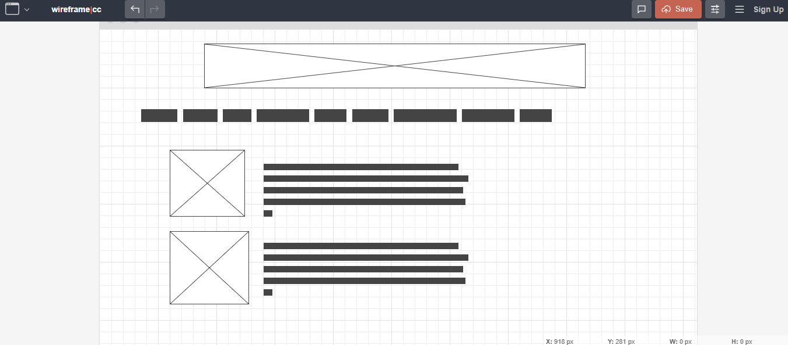

Site Purpose: The purpose of this site is to talk about the Lego most sucsessful serrires. Lego Bionicle, I will be talking about how it saved Lego. And why it was such a big hit for the fans. I will also go over story and other facts, including how it ended.
The Scenarios: Here I would be answering people question about Lego Bionicle. The most comon question I get is why did every one like Lego Bionicle? A: It was the first Lego theme to have a story. As well as it being something different from the started bricks that lego was using.
Color Schema: The colors I have chose is black and blue. Blue will be the primary color to as it is said, that blue invoc the feeling of visdom. While the black invocs a sences of timeless evets. The blue wil be used to as a way to highlit the headers of the site. While the black will be mainly used for showing the reader the history of Lego Bionicle.
Typography: Helvetica is what I will be using for my heading this will have readers look and catch there eye. The font I will be using for the paragragh is Times new roman. I think that this will be a realu good way to look nice and co t be clutered with confusing font text.
